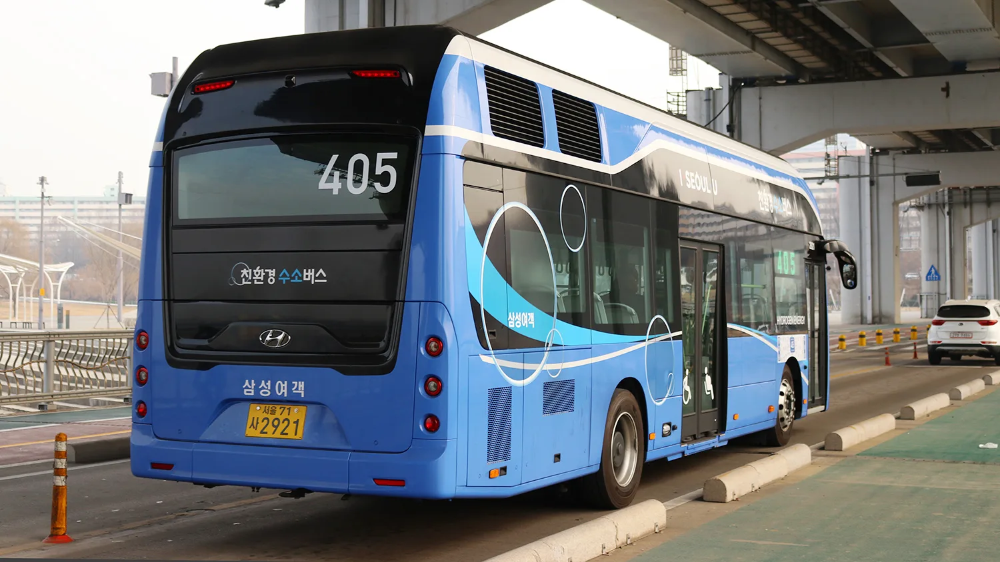
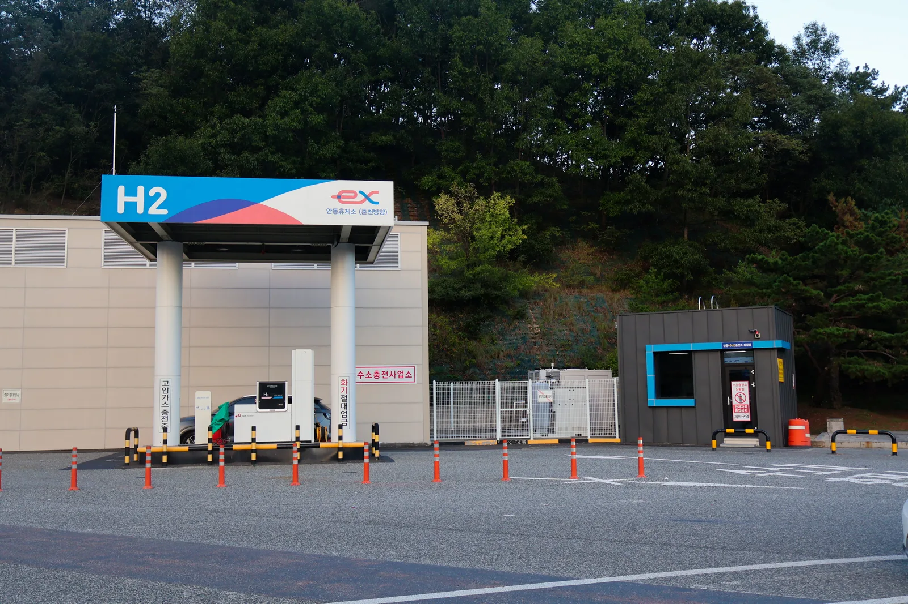
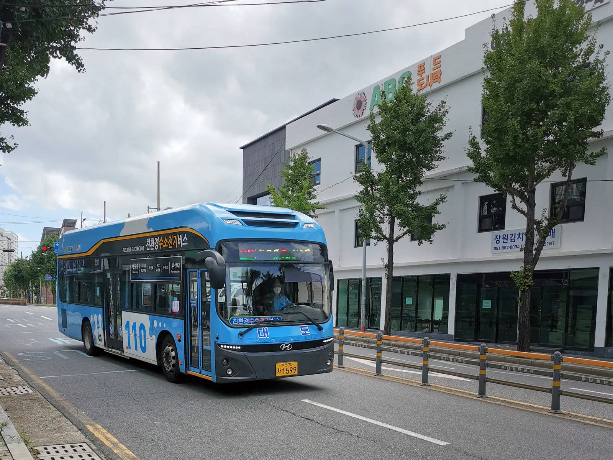
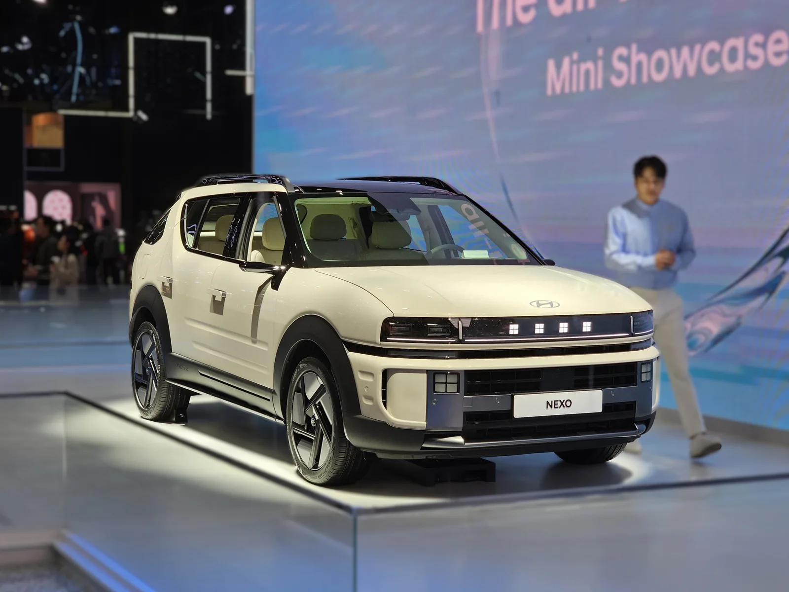

▲ 현대 일렉시티 수소전기버스가 서울 시내를 달리는 모습. 현대차는 선진그룹·하이넷과 손잡고 수도권 버스 480대를 2032년까지 수소버스로 전환한다. ⓒ Wikimedia Commons
수도권 도로를 달리는 시내버스 수백 대가 앞으로 7년에 걸쳐 순차적으로 수소로 전환된다. 현대자동차가 버스 운송기업 선진그룹, 수소충전 인프라 전문기업 하이넷과 손잡고 2032년까지 480대의 수소버스를 도입하는 내용의 업무협약을 체결했다고 밝혔다.
협약 개요: 3자 협력으로 480대 순차 전환
'충전 인프라 혁신 기반 수소 모빌리티 보급 확대를 위한 다자간 업무협약'이라는 이름으로 2026년 9월 16일 서울 강남대로의 UX 스튜디오 서울에서 체결된 이번 협약에는 현대자동차 비즈니스이노베이션실장 박승원 상무를 비롯해 선진그룹 신재호 회장과 박홍제 부회장, 하이넷 송성호 대표이사가 참석했다. 여기에 한국자동차환경협회와 한국천연가스수소충전협회도 협력 기관으로 이름을 올려, 단순한 차량 공급 계약을 넘어선 산업 생태계 차원의 협력 구도를 갖췄다.
선진그룹은 수도권과 호남권에 걸쳐 17개 법인, 1700여 대의 버스를 운영하는 대형 운송 사업자다. 이 가운데 480대를 2032년까지 순차적으로 수소버스로 바꾸겠다는 것이 이번 협약의 골자다. 대규모 운송 사업자가 명확한 전환 대수와 시한을 못박고 나섰다는 점에서, 국내 상용차 수소 전환 흐름에 실질적인 물량을 더하는 사례로 평가된다. 역할 분담을 보면 현대차는 전환 시기에 맞춘 수소버스 공급과 정비 인력 교육을 맡고, 하이넷은 대용량 수소충전소의 구축과 운영을 전담한다.

▲ 서울 405번 노선을 운행하는 현대 일렉시티 수소전기버스 후면 — 지붕 위 5개의 수소탱크에 34kg의 수소를 저장해 완충 시 500km 이상 주행한다
인프라 확충: CNG 충전소를 수소충전소로
버스를 수소로 바꾸려면 차량 공급 못지않게 충전 인프라 확보가 관건이다. 이번 협약에서는 경기도 김포와 파주에 위치한 선진그룹 계열사 차고지의 기존 CNG(압축천연가스) 충전소를 수소충전소로 전환하는 계획이 포함됐다. 하이넷이 대용량 수소충전소 구축을 맡아 안정적인 공급 체계를 마련한다는 방침이다.
기존 시내버스 상당수가 CNG를 연료로 사용해온 만큼, 이미 확보된 차고지 부지와 충전 설비 기반을 활용해 수소충전소로 전환하는 방식은 초기 인프라 구축 부담을 줄이는 현실적인 접근으로 풀이된다. 한국자동차환경협회와 한국천연가스수소충전협회 등 협력 기관은 관련 제도 기반 조성을 뒷받침하는 역할을 맡는다.

▲ 경북 안동휴게소 수소충전소(자료사진) — 이번 협약처럼 기존 부지를 활용해 수소충전 설비를 구축하는 방식은 전국적으로 확산되는 추세다. ⓒ LandAndTree, Wikimedia Commons (CC BY-SA 4.0)

▲ 부산 시내를 운행 중인 현대 일렉시티 수소전기버스 — 서울뿐 아니라 부산 등 전국 각지에서 이미 노선버스로 실제 운행되고 있다
현대 일렉시티 수소전기버스, 이미 검증된 상용차
이번 협약의 중심에 놓인 차량은 현대차의 수소전기버스 '일렉시티 FCEV'다. 2019년 출시된 이 버스는 90kW급 수소연료전지 스택 2개를 결합한 180kW급 고용량 수소연료전지 시스템을 탑재했으며, 지붕에 실린 5개의 수소탱크에 34kg의 수소를 저장해 완충 시 500km 이상을 주행할 수 있다. 서울 405번 노선을 비롯해 부산 등 전국 각지에서 이미 실제 노선버스로 운행되며 운행 데이터를 쌓아온 검증된 모델이라는 점도 이번 대규모 전환 결정에 힘을 실었을 것으로 보인다.
현대차 공식 상용차 브랜드 소개는 아래에서 확인 가능하다. 일렉시티 FCEV 소개 바로가기

▲ 현대 넥쏘(자료사진) — 현대차는 승용 수소전기차 넥쏘와 함께 버스·트럭 등 상용 라인업까지 수소 모빌리티 생태계를 넓혀가고 있다
제주 실증사업이 보여주는 현대차의 수소 전략
이번 수도권 협약과 함께 최근 공개된 현대차의 제주도 수소 모빌리티 실증사업도 같은 맥락에서 읽힌다. 현대차그룹 신승규 부사장은 "재생에너지 보급 확대에 따라 잉여 전력으로 생산한 수소를 저장·활용하는 시스템이 전력망 안정화의 핵심"이라고 강조한 바 있다. 제주도에서는 3.3MW급 수전해 단지에서 하루 200kg의 청정수소를 생산하며, 2027년까지 승용차 290대, 버스 76대, 트럭 3대 등 누적 370여 대의 수소차 보급을 목표로 하고 있다. 2021년부터 제주도와 함께 수소·V2G(Vehicle-to-Grid) 생태계 조성을 추진해온 결과다.
현대차는 이런 실증 경험을 바탕으로 시내버스, 택시, 대형 물류트럭 같은 '도심 필수 모빌리티' 영역에서 수소전기차가 강점을 발휘한다고 보고 있다. 장거리·고중량 운행에 유리하고 충전 시간이 짧으며 가동률을 높게 유지할 수 있다는 것이다. 아울러 비상 상황에서 외부 전력 의존도를 낮춰 도시 교통의 회복탄력성을 높이는 역할도 기대하고 있다.
전기차와 경쟁 아닌 보완, 수소 모빌리티의 자리
배터리전기차(BEV) 보급이 빠르게 늘어나는 상황에서 수소전기차(FCEV)의 입지를 두고는 여러 시각이 엇갈려 왔다. 하지만 현대차의 최근 행보를 보면, 수소를 배터리전기차와 경쟁하는 대체재가 아니라 상호 보완하는 에너지원으로 포지셔닝하려는 방향이 뚜렷하다. 승용 시장에서는 배터리전기차가 대세로 자리잡는 한편, 장거리·고가동률이 필요한 상용차·버스 영역에서는 수소가 강점을 살릴 수 있다는 역할 분담론이다.
이번 선진그룹·하이넷과의 협약은 이런 전략이 실제 대형 물량 계약으로 이어진 첫 사례 중 하나로 꼽힌다. 480대라는 구체적인 목표치와 2032년이라는 명확한 시한이 제시된 만큼, 향후 수도권 대중교통 현장에서 수소버스를 접할 기회는 꾸준히 늘어날 전망이다.